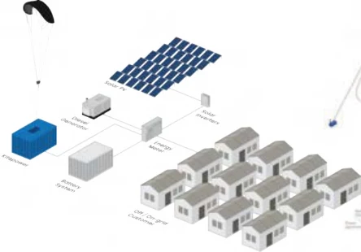

Portfolio / 2026
A broad perspective.
A considered outcome.
Selected projects across product engineering, digital health, circular systems and design strategy.
Project index
Nine projects
The Epilepsy Journal
Connecting daily experiences with physiological data for more personal epilepsy research.

Infant Growth Monitor
An integrated measurement system for community healthcare in rural Cameroon.

Circular Healthcare
Rethinking hospital plastic waste as a circular service and business model.

Vehicle Interior Model
Testing autonomous vehicle interiors against a diverse range of bodies.

Cookware Lifecycle Assessment
Looking beyond material choice to understand cookware’s environmental impact.

Design & Entrepreneurship
Connecting design decisions to the realities of building and growing a business.

Redesigning Innovation
A shared model for a more balanced innovation process at Justid.

The Multi Coach Interior
Three train environments for working, relaxing and travelling together.

The Flipper
Connecting accessible waste disposal with personal feedback for Avalex recycling centres.